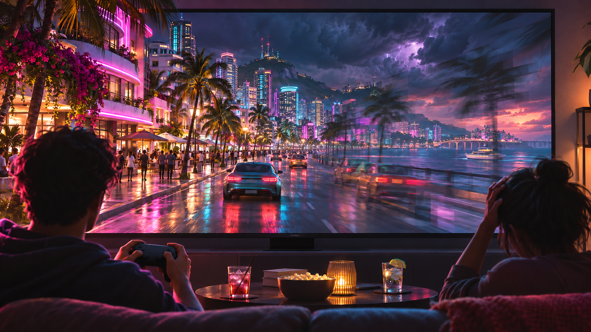

GTA 6 Players Praise Leonida but Debate Performance
GTA 6 has launched to huge enthusiasm, but early player discussion is split by 30 FPS, base-console dips and Xbox Series S performance.

What happened
Rockstar Games launched Grand Theft Auto VI worldwide on November 19 for PlayStation 5 and Xbox Series X|S. The release is a single-player experience at launch, targets 30 frames per second on every console and can require up to 212 GB. Rockstar has not announced a PC date or a 60 FPS mode, and its current support article routes console errors to Sony and Microsoft troubleshooting rather than listing a confirmed set of GTA 6 launch defects.
The commercial start appears enormous, but the first public sales figure is an estimate rather than an audited publisher total. AP reports that Sensor Tower estimates approximately 24.6 million units and $2.36 billion in revenue. Rockstar and Take-Two had not published an official launch sell-through number when this article was prepared, so those figures should not be treated as final company results.
What players are praising — and what the ratings cannot prove
The clearest platform-owned sentiment signal is strongly positive. On November 20, the PlayStation Store displayed a 4.85 out of 5 average from 144,666 global player ratings: 95 percent were five-star and 2 percent were one-star. Sony says its written reviews come from verified owners. That is a much broader sample than any individual social post, and it supports the conclusion that launch-day enthusiasm is real.
It is not the same as a completed-game verdict. The store's visible review feed includes owners rating immediately and, in at least one case, openly doing so before starting the game. A separate PeakMetrics analysis of social conversation from November 11 through the early launch rollout found a much narrower split: among posts that took a clear side, 54.5 percent were favorable and 45.5 percent unfavorable. Its sample covered X, Reddit, Bluesky, Instagram, Facebook and TikTok, but it is social-listening data rather than a representative player survey.
Across that social sample and long-form reviews, the most consistent praise is for Leonida's density, NPC behavior, soundtrack, environmental detail and the relationship between Jason and Lucia. TechRadar's reviewer reached that conclusion after roughly 100 hours on PS5 Pro, while Windows Central's Xbox Series X review similarly emphasized discovery and world simulation. Early player threads repeat those themes, especially the feeling that small encounters make the world seem unusually alive.
The performance complaints that testing supports
The 30 FPS cap is confirmed, not a launch rumor. Rockstar says the simulation, ray-traced lighting and environmental density use the current consoles' processing budget, and PS5 Pro spends its extra graphics capacity on clearer reconstruction and additional ray-traced shadows rather than a higher frame-rate mode. That trade-off is visible even when the target is maintained: players accustomed to 60 FPS describe the first hours as jarring, while others say they adapt after extended play.
Independent testing gives the complaints platform-specific context. Digital Foundry's results, reported by VGC, describe PS5 Pro as a near-flawless 30 FPS experience outside deliberate stress tests. Base PS5 shows small drops during ordinary city traversal and longer drops under heavy destruction. On Xbox Series S, the same analysis found prolonged performance in the mid-to-upper 20s during driving and combat, with especially demanding scenes reaching about 20 FPS. That makes Series S the version with the clearest reason to wait for optimization work.
Not every report of sluggishness is a frame-rate problem. Players have also highlighted the default controller dead zone, which can make small stick movements feel delayed; the setting is adjustable in-game. Motion blur preferences differ by display, particularly on OLED panels. These options may improve perceived responsiveness or motion clarity, but they do not raise the underlying frame rate. Community suggestions involving console caches, HDCP or television interpolation are not official Rockstar fixes and should not be presented as patches.
The Arcade World take and what happens next
The first-day picture is better described as an acclaimed game with uneven hardware outcomes than either a flawless launch or a technical collapse. The PlayStation rating aggregate shows broad owner approval, and experienced reviewers independently praise the same qualities that dominate positive player discussion. At the same time, measured drops on base PS5 and especially Series S show that the performance criticism is not merely social-media outrage.
If you already own a PS5 Pro and accept 30 FPS, there is little technical reason to wait. Base PS5 and Xbox Series X players should expect the fixed 30 FPS presentation and watch for areas where performance slips; Series S buyers have the strongest case for waiting. Anyone who considers 60 FPS essential should not buy on the assumption that an unannounced performance mode or PC version is imminent.
The next meaningful evidence will be Rockstar's first public title-update notes, repeatable before-and-after performance measurements and longer player reviews that move beyond the opening chapters. Until then, isolated crash clips, viral physics bugs and individual praise posts are examples of what can happen, not reliable estimates of how often it happens.
Sources and further reading
- Rockstar Games — official GTA VI launch announcement
- Rockstar Games — official 30 FPS target, PS5 Pro features and preload details
- Rockstar Support — official GTA VI console error troubleshooting
- PlayStation Store — verified-owner rating aggregate and review distribution
- AP — Sensor Tower launch-sales estimate and market context
- PeakMetrics — multi-platform early launch conversation analysis
- VGC — Digital Foundry PS5 and PS5 Pro performance results
- VGC — Digital Foundry Xbox Series S performance results
- TechRadar — spoiler-light PS5 Pro review after approximately 100 hours
- Windows Central — spoiler-free Xbox Series X review and platform context
- TechRadar — launch-day player reports on dead zones, motion blur and frame rate
Keep exploring
Open the Game Room or visit the latest stories.